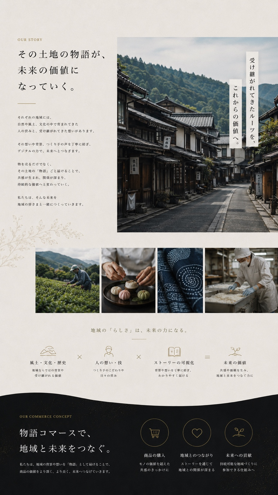
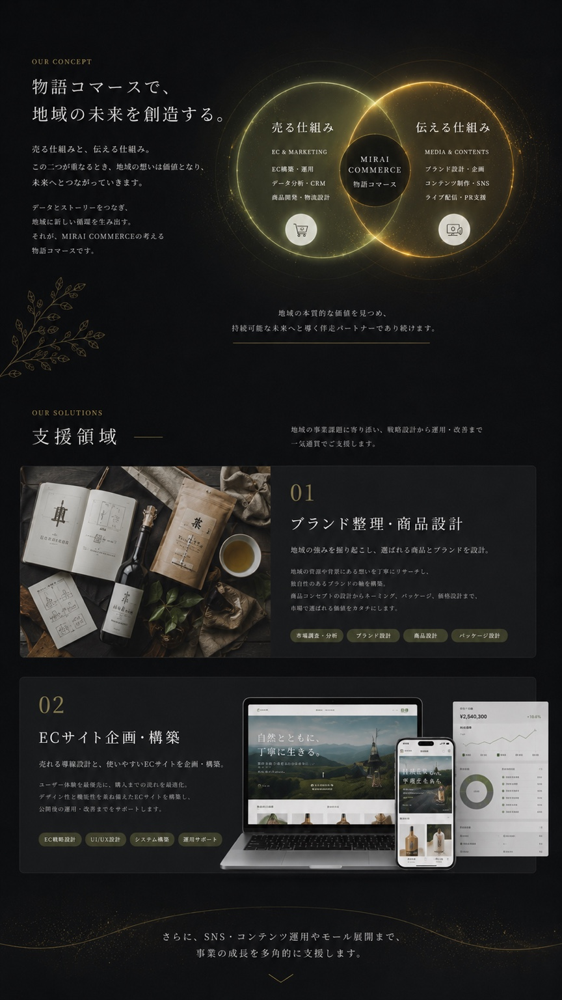
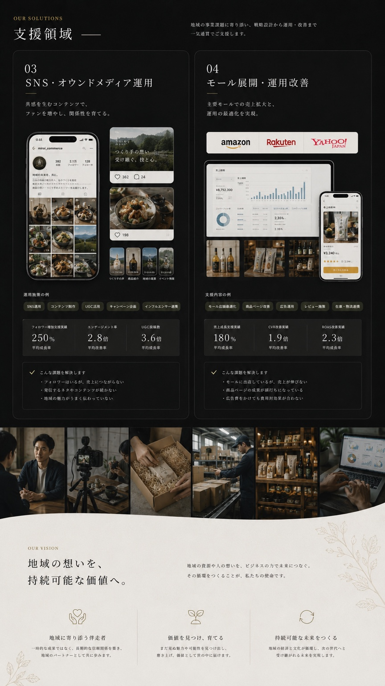
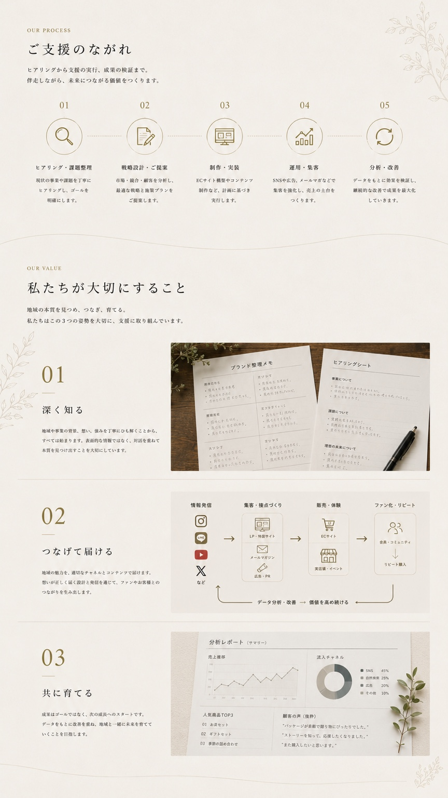
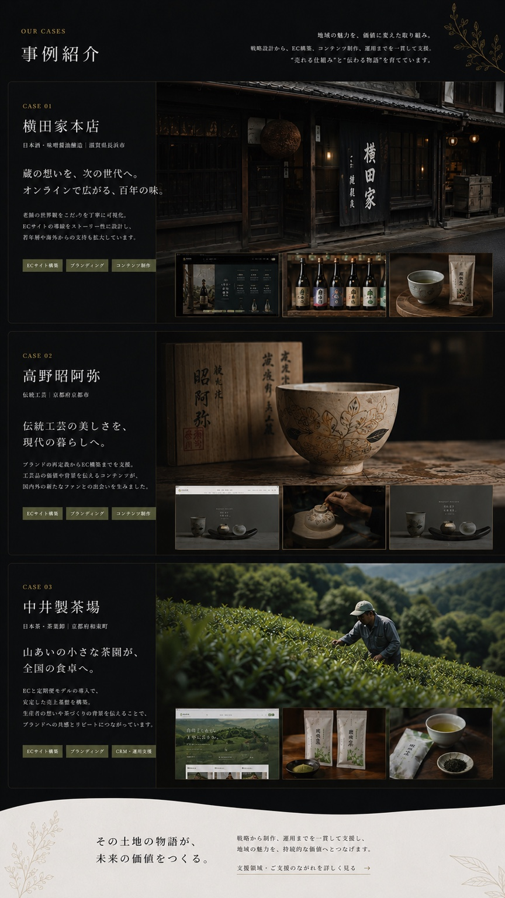
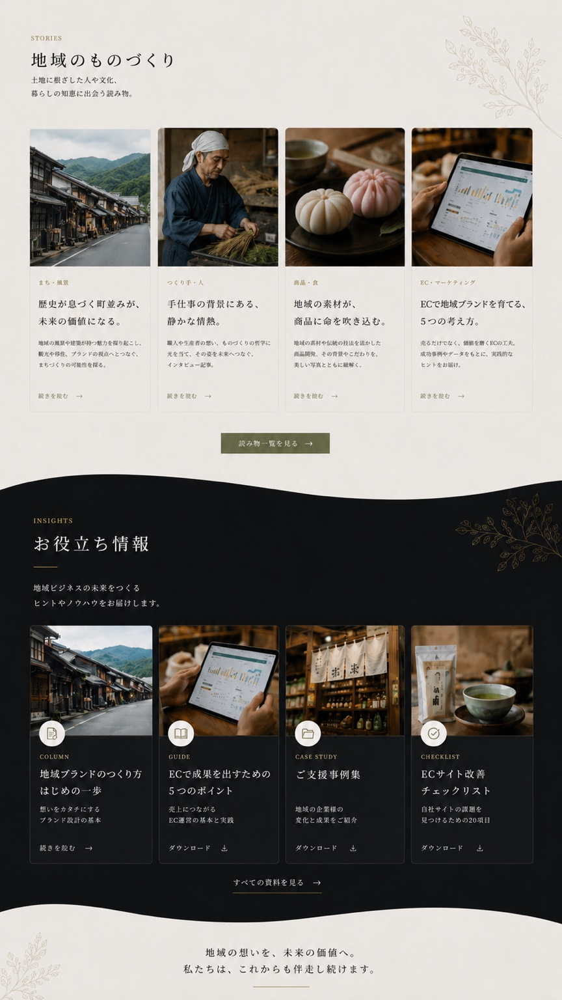
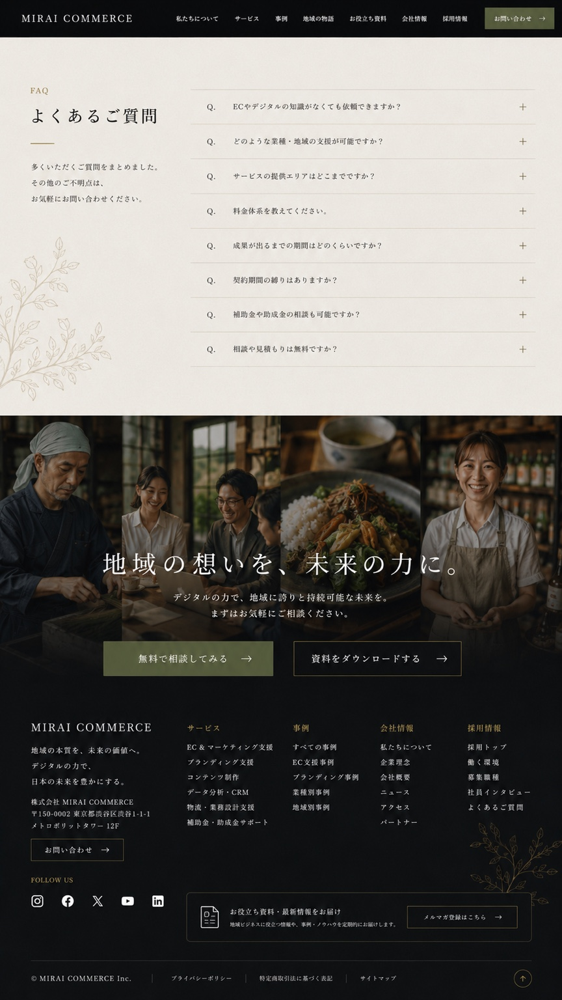

01
ブランド整理・商品設計
市場調査、顧客理解、商品の強みを整理し、伝わる言葉と選ばれる商品構成へ落とし込みます。
LOCAL VALUE / COMMERCE DESIGN
つくり手の想いと、テクノロジーで、
日本の未来を豊かにする。







OUR STORY
地域には、価格だけでは語れない魅力があります。風土、歴史、手仕事、そこで暮らす人のまなざし。それらを丁寧に掘り起こし、言葉と写真、購入体験へ翻訳します。
私たちは、ブランド整理からオンラインストア設計、撮影ディレクション、改善運用までをひとつながりの体験として設計します。
VALUE FORMULA
COMMERCE CONCEPT
美しいだけのサイトでも、売るだけのECでもなく、作り手の誇りと事業の継続性が両立する商いをめざします。
OUR SOLUTIONS
地域資源を発見し、画面の体験へ整え、運用しながら育てるための領域を横断して支援します。
市場調査、顧客理解、商品の強みを整理し、伝わる言葉と選ばれる商品構成へ落とし込みます。
トップページ、商品詳細、読み物、購入導線を一体で設計し、世界観と買いやすさを両立します。
SNS投稿、読み物、UGC導線を組み合わせ、販売前後の接点を増やします。
Amazon / 楽天 / Yahoo! などの販売面を想定し、分析から改善施策まで整理します。
VISION
背景にある風土、手の跡、時間の積み重ねを情報設計に変換します。
PROCESS
VALUES
土地、素材、作り手の言葉を聞き、売り文句になる前の本質を掘り下げます。
SNS、読み物、EC、同梱物を分断せず、出会いからファン化までの道筋を整えます。
公開後の数値を見ながら、ブランドの品位を守って改善を重ねます。
CASES
以下は構成確認用の想定事例です。名称・数値は実績と誤認されないよう仮の表現です。
老舗食品店の背景を読み物化し、ギフト購入までの導線を整理。
陶磁器の制作背景と使う場面をつなぎ、ブランドページと商品ページを再設計。
茶畑の風景、製法、飲み方を編集し、定期購入と贈答需要を伸ばす構成に。
STORIES
INSIGHTS
FAQ
はい。現状の資産を確認し、改善すべき導線や表現から段階的に整えます。
撮影方針の整理や必要カットの洗い出しから支援できます。